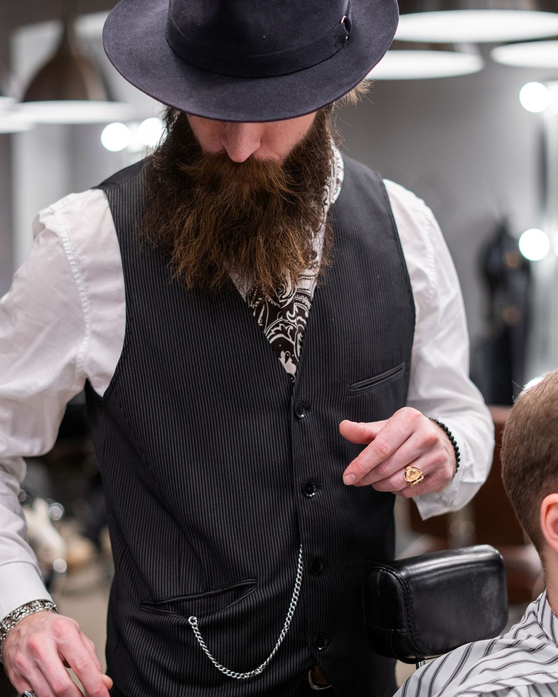
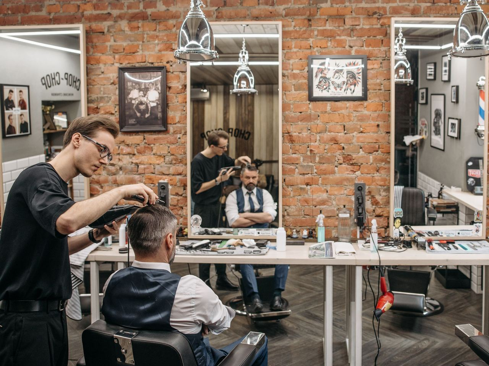

Barbershop · Södermalm
Skarpt. Varje gång.
Klippning, fades och skägg av erfarna barberare på Maria Skolgata 38.
Boka tid★ 4,9 av 5 · 2 100+ betyg på Bokadirekt

Tjänster
Klippning
Klippning och styling.
Skin fade
Rena, skarpa övergångar.
Hår & skägg
Linjer med kniv och aftershave.
Rakning
Tvål, varm handduk och kniv.
Se aktuella tjänster och priser på Bokadirekt eller ring oss.

Hantverk i stolen
Hos Brödernas tar barberarna sig tid för varje kund – från klassisk klippning till skin fade och rakning med varm handduk och kniv. Drop-in eller boka i förväg.
4,9i snitt från över 2 100 betyg på Bokadirekt.
Öppettider
| Måndag – fredag | 10:00 – 19:00 |
| Lördag | 10:00 – 15:00 |
| Söndag | 11:00 – 15:00 |
Maria Skolgata 38, 118 53 Stockholm
Södermalm · nära Zinkensdamm
076-400 04 94
brodernasbarbershop@gmail.com